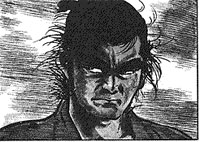

|
i insist i'm not an otaku. i mean, i've never dressed up as sailor moon and i've never had a crush on belldandy, right? admittedly, though, i've got a collection of anime and manga that's slowly expanding to fill the bottom rack or two of my dvd case and bookshelf...
robotech
yeah, you know you remember brave rick hunter and that hottie minmei. robotech was the anime series that hit us television-weaned north american kids in the sweet spot back in the 80's. now that it's out on dvd, we can enjoy the massive nostalgia rush that comes with it. it's not the best out there by any means (kind of cheesy and overwrought at times, with washed out audio) but it sure seemed epic when i was nine...
neon genesis evangelion
 mix equal parts x-files, enders' game, and big badass robots with guns. serve on a bed of broiled angst. eva is a truly great piece of anime marred by a bizarre conclusion. earth is under siege by hellaciously destructive critters called angels. secret government agencies and international strike forces mobilize to stop them, but the only real hope lies in the Evanglion Units: twenty-story tall robots piloted by a bunch of screwed up fourteen year olds. The series starts out as solid action, grows a healthy head of intrigue and character-driven angst, then -- around episode 19 or 20 -- veers into the world of the truly bizarre. By the time the conclusion rolls around, one of the best series around has turned into a bad acid trip. watch it for the art, watch it for the deep characterization. watch it for the great action sequences, and the sharp plot twists. don't watch it if you want a satisfying tie-up to the series. mix equal parts x-files, enders' game, and big badass robots with guns. serve on a bed of broiled angst. eva is a truly great piece of anime marred by a bizarre conclusion. earth is under siege by hellaciously destructive critters called angels. secret government agencies and international strike forces mobilize to stop them, but the only real hope lies in the Evanglion Units: twenty-story tall robots piloted by a bunch of screwed up fourteen year olds. The series starts out as solid action, grows a healthy head of intrigue and character-driven angst, then -- around episode 19 or 20 -- veers into the world of the truly bizarre. By the time the conclusion rolls around, one of the best series around has turned into a bad acid trip. watch it for the art, watch it for the deep characterization. watch it for the great action sequences, and the sharp plot twists. don't watch it if you want a satisfying tie-up to the series.
cowboy bebop
 ooh lah lah. this, in my opinion, is what solid dramatic anime should be. the art is exquisite, the writing is tight and witty without being too cute, and the jazz/blues/bebop soundtrack is a pleasure. spike and jet are odd-couple bounty hunters slogging through space trying to make a living and listening to charlie parker. as with all good pulp heroes, their pasts come back to haunt them. the series never gives in to cheesy cliches (save one episode that's a throway joke for fans) and it develops strong, solid characters. unlike eva, it avoids gratuitous melodrama and emotional manipulation in favor of a subplot plot that builds slowly over the entire series, then explodes in the last few episodes. spike, the grumpy twenty-something loner who favors martial arts and rumpled blue suits over guns and leather, is one of the cooler protagonists around. run, don't walk, to a video shop or a suncoast. get this series. trust me. ooh lah lah. this, in my opinion, is what solid dramatic anime should be. the art is exquisite, the writing is tight and witty without being too cute, and the jazz/blues/bebop soundtrack is a pleasure. spike and jet are odd-couple bounty hunters slogging through space trying to make a living and listening to charlie parker. as with all good pulp heroes, their pasts come back to haunt them. the series never gives in to cheesy cliches (save one episode that's a throway joke for fans) and it develops strong, solid characters. unlike eva, it avoids gratuitous melodrama and emotional manipulation in favor of a subplot plot that builds slowly over the entire series, then explodes in the last few episodes. spike, the grumpy twenty-something loner who favors martial arts and rumpled blue suits over guns and leather, is one of the cooler protagonists around. run, don't walk, to a video shop or a suncoast. get this series. trust me.
trigun
 it's zany, over-the-top, and shrouded in a haze of smoke from all the gunfire. trigun is a space-opera scifi western series that follows vash, the humanoid typhoon: a gunman so dangerous that a $$60,000,000,000 price is on his head. The other regular characters are two insurance agents hired to follow him, keeping track of the cataclysmic destruction that Just Seems To Happen whenever he's around. See Vash take on hundreds of bandits with a handgun and a trash can lid! See him dodge bullets! Laugh as he steals donuts! It's a good action romp, and the last 10 episodes or so deliver some solid dramatic material when the series sheds most of its one-liners to confront Vash's dark past. it's zany, over-the-top, and shrouded in a haze of smoke from all the gunfire. trigun is a space-opera scifi western series that follows vash, the humanoid typhoon: a gunman so dangerous that a $$60,000,000,000 price is on his head. The other regular characters are two insurance agents hired to follow him, keeping track of the cataclysmic destruction that Just Seems To Happen whenever he's around. See Vash take on hundreds of bandits with a handgun and a trash can lid! See him dodge bullets! Laugh as he steals donuts! It's a good action romp, and the last 10 episodes or so deliver some solid dramatic material when the series sheds most of its one-liners to confront Vash's dark past.
lone wolf and cub
ok, purists. this isn't anime. it isn't even animated! it's manga, and good manga at that. this series, written in the 70's, busted open manga as a Legit Art Form and even made it to us shores. it follows the wanderings of a disgraced samurai turned assassin, and his infant son. violent, unflinching, but beautiful, too, in its portrayal of japan's history and the quest for peace and completion by a man with bloodstained hands. it's now available in a series of 10 super-affordable paperbacks. check your local borders sometime and see what you think of them. | |